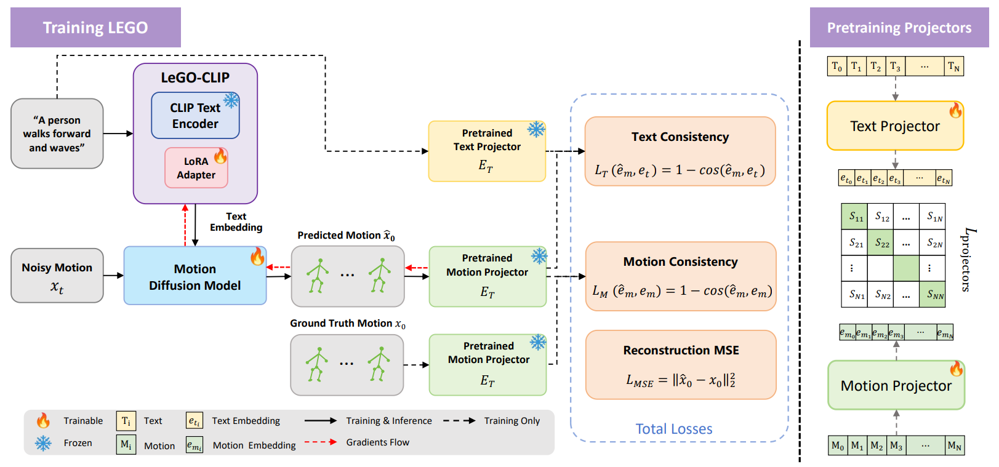
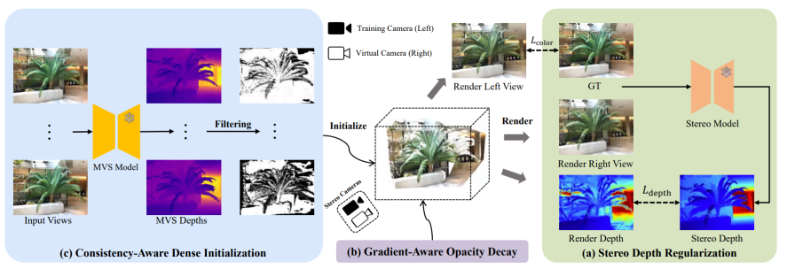

Publications


StereoGS: Sparse-View 3D Gaussian Splatting via Stereo Prior
European Conference on Computer Vision (ECCV) 2026

I'm a Ph.D. candidate in Information and Communication Engineering at the South China University of Technology (SCUT), advised by Prof. Changxing Ding. Since January 2026, I have been a visiting student at The University of Hong Kong (HKU), advised by Prof. Taku Komura.
I received an M.S. in Electronics and Communications Engineering from SCUT in 2021, advised by Professor Yongjian Hu, and a B.S. in Electronic and Information Engineering from SCUT in 2018. My research interests lie in human motion generation, robotics, and multimodal learning.

